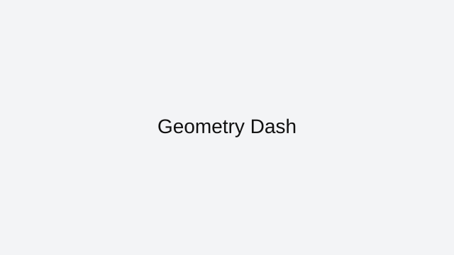

Geometry Dash
Geometry Dash is precision memory gameplay. The level rhythm is fixed, but your consistency under speed is the challenge.
How to approach this game
Break difficult sections into checkpoints mentally and train each one for clean timing. Keep input rhythm stable and avoid changing click force between attempts.
Common mistakes to avoid
Players often rush retries without identifying where timing drift starts. Review your last failure point, then target that transition on the next run.
Who this game is best for
Great for players who enjoy hard platforming, music-sync pacing, and mastery through repetition.
Why it stays in our curated index
Geometry Dash stays in ArcadeZone's reviewed collection because it has a clear skill loop, reliable browser access, and enough real gameplay depth to justify written guidance. We do not keep indexed pages that only repeat generic descriptions or send users to thin external links.
Best session style for this game
These sessions are usually best in short bursts where you can focus on one movement habit, one aiming habit, or one route improvement at a time.
Related reviewed games: Krunker.io, Slither.io, 1v1.LOL.
ArcadeZone reviews this title for accessibility, control clarity, and replay value before keeping it in the curated index. Our goal is to help players choose the right game quickly, then improve through practical guidance instead of generic filler text.
What you'll love
- Curated review page with practical strategy guidance and clean navigation.
- Direct access to browser gameplay source with no installs required.
- Category fit: Action gameplay style with related recommendations.
Game essentials
- Category: Action
- Game type: Platformer
- Page status: Indexed (reviewed)
- Play format: opens the original browser source in a new tab

How to play
Use keyboard movement with mouse aiming. Stay mobile, pre-aim common angles, and avoid open-lane overexposure.
Tips & Tricks
- Break difficult sections into checkpoints mentally and train each one for clean timing. Keep input rhythm stable and avoid changing click force between attempts.
- Players often rush retries without identifying where timing drift starts. Review your last failure point, then target that transition on the next run.
- Practice in short sessions and track one improvement goal per run to build measurable progress.
Frequently asked questions
How do I beat hard sections in Geometry Dash?
Split the level into segments and drill transitions where timing breaks.
Should I change click style often?
No. Keep click force and rhythm consistent for stable muscle memory.
What causes repeated fails at the same spot?
Pacing drift before the obstacle. Track the lead-in section, not just the fail tile.
Play
Use the verified source link below to launch the game in a new tab.
Open Geometry Dash (external)Related games
Related reviewed games: Krunker.io, Slither.io, 1v1.LOL.
More from ArcadeZone
Developer & Credits
ArcadeZone reviews Geometry Dash for control clarity, replay value, and accessibility before listing it as curated content. We link to the original browser source and provide player-focused guidance on this page.